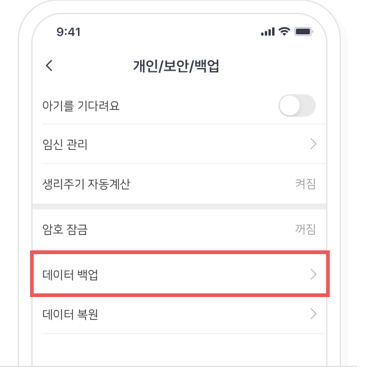
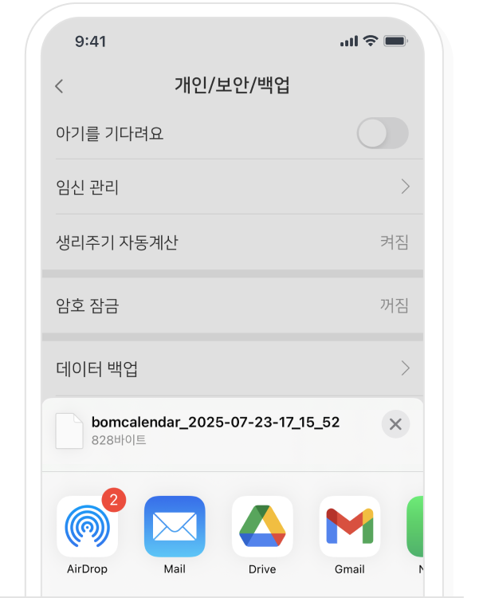
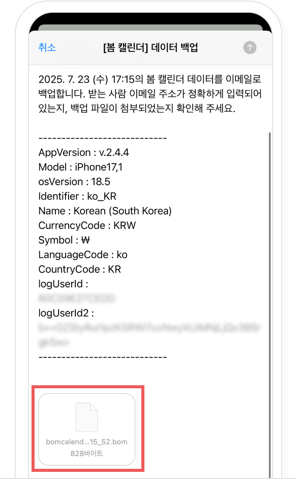
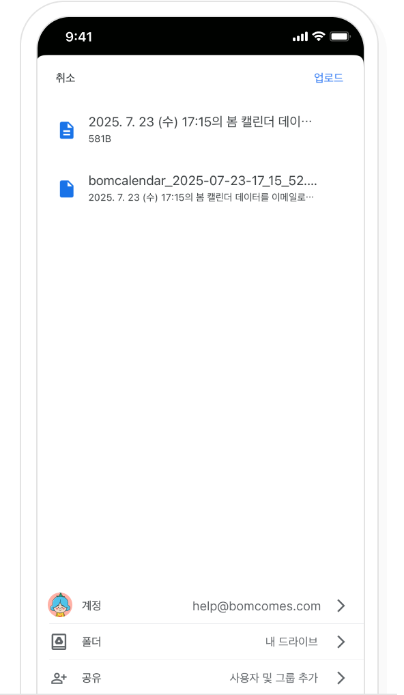

-
봄 캘린더 설정 > 개인/보안/백업에서 '데이터 백업'을 선택해주세요.
백업하려는 메일이나 클라우드 어플을 선택해주세요.
A. 데이터를 메일에 백업할 시
백업을 메일에 하려면 데이터가 메일에 첨부되었는지 확인하고, 받는 사람에 백업할 이메일 주소를 입력한 뒤 메일 발송을 선택해주세요. 메일을 발송하면 받는 메일로 데이터가 보내집니다.
B. 데이터를 클라우드에 백업할 시
백업을 클라우드에 하려면 저장하려는 계정과 위치가 맞는지 확인 후 ‘저장(업로드)’을 선택해주세요. ‘저장(업로드)을 선택하면 클라우드에 사용 데이터가 저장됩니다.
